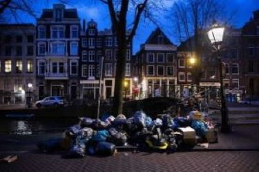

Amsterdam loopt flink achter met afvalscheiden…
Wist je dat er in Amsterdam maar slechts 32% afval wordt gescheiden, terwijl het landelijke gemiddelde al op 60% zit? Dat is een groot verschil en moet natuurlijk beter! Want in 2050 is het plan om Amsterdam een afvalvrije stad te maken.
Deze mooie plan kunnen we waarmaken als we allemaal een steentje bijdragen. Door bijvoorbeeld een duurzaam initiatief in Amsterdam te steunen😊 zoals bijvoorbeeld Wonder Wasteland! Lees meer op de volgende pagina.